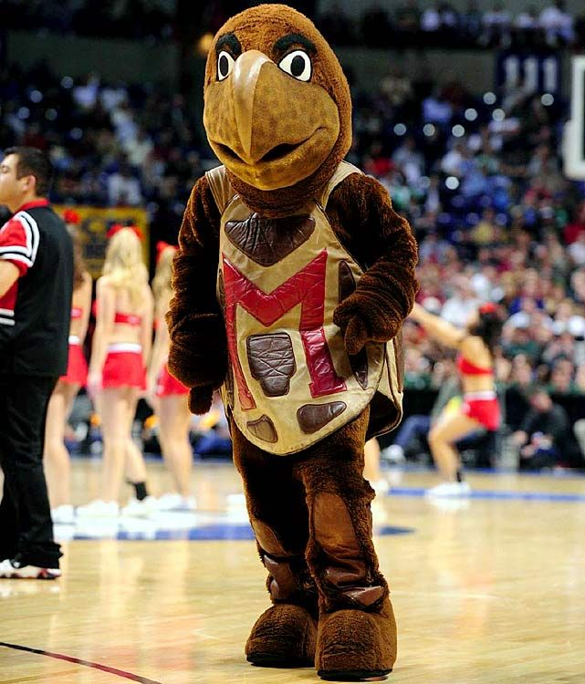

I like to spend most of my time cheering on my school!
Favorite Spots on Campus
This website is a small bio about me and my favorite things to do. One of my favorite things to do is to walk around campus and see so many new faces! Below I will list all of my favorite spots to hang out and talk to students!
-
Adele H. Stamp Student Union
One of the main buildings on our campus
- Plenty of new students hang out here and there is great food
- There is an amazing gift shop where I buy a lot of my school merchandise
- Terpzone is a great place to unwind and play games
-
McKeldin Library
The biggest Library on campus
- Great quiet place to study and beautiful scenery
- Seven floors of space so you will always have a space to study
- Reserved rooms for large study groups or just you
-
Capital One Field
UMD's football stadium
- Great fans, families and students come here to watch some intense games
- Cool place to hang out with friends
- One of the best stadiums in the Big 10